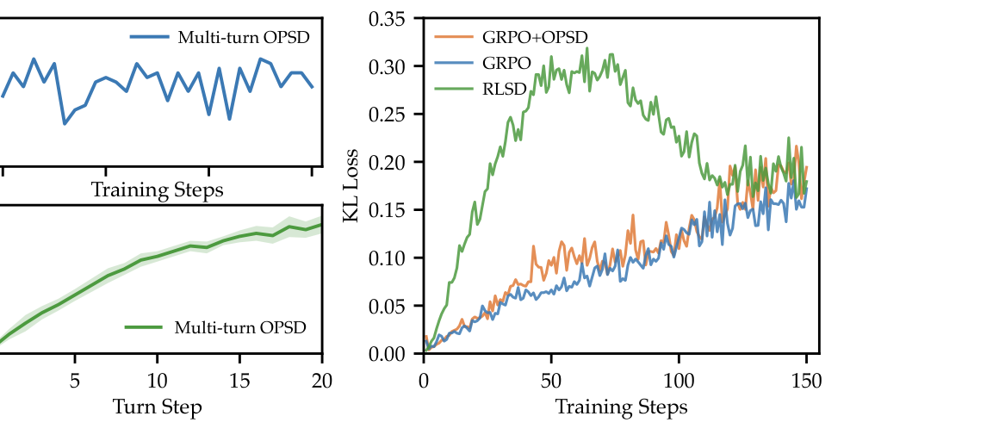
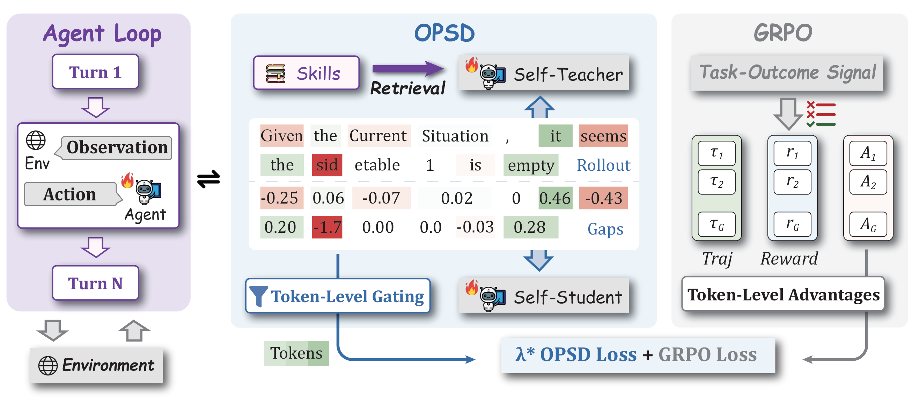
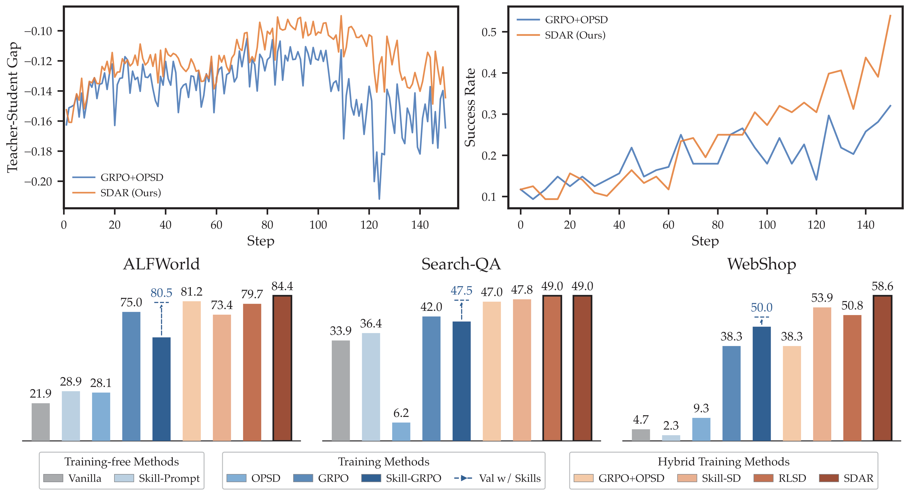
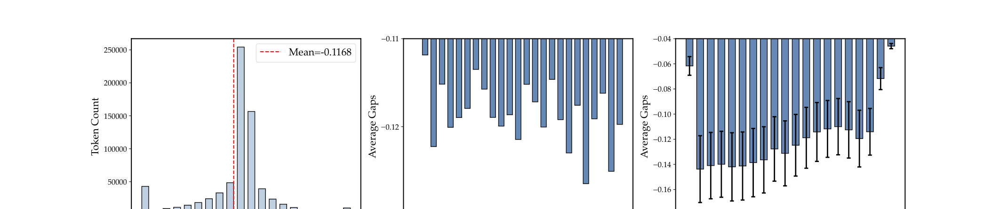

SDAR：以 gated self-distillation 稳住多轮 agentic RL
Self-Distilled Agentic Reinforcement Learning
①开源贡献 Open-source Artifacts
已在 GitHub 开源官方实现 ZJU-REAL/SDAR（Apache-2.0），含三套环境（ALFWorld / WebShop / Search-QA）的 setup 与训练脚本，并实现了 SDAR 与全部 6 个 baseline（GRPO、Skill-GRPO、OPSD、GRPO+OPSD、Skill-SD、RLSD）。未释出预训练权重；论文中训练用的 base model 是公开的 Qwen2.5 / Qwen3-Instruct 系列，所用 SkillBank 来自外部工作 SkillRL，benchmark 本身均为公开数据/环境。下表区分「论文声称」与「实际可下载」（已通过 WebFetch 核实 README）。
| 类型 | 是否开源 | 内容 / 链接 |
|---|---|---|
| 代码 Code | ✔ | github.com/ZJU-REAL/SDAR · Apache-2.0 · Python（vLLM + flash-attn，Python 3.12）；含 ALFWorld/WebShop/Search 三环境 setup、examples/ 训练脚本、FSDP/Megatron checkpoint 合并工具；SDAR 及 6 个 baseline 全部复现。截至解读日 153★ / 8 commits。 |
| 模型权重 Weights | ✘ | 未释出训练后权重；base 为公开 Qwen2.5-3B/7B-Instruct、Qwen3-1.7B-Instruct。 |
| 数据集 Dataset | △ | 无新数据集发布；提供 Search-QA 的数据准备脚本（需自行下载 index 与 Wikipedia 数据）。训练任务取自 ALFWorld、Search-R1（NQ/HotpotQA）、WebShop 等公开来源。 |
| 环境 / Benchmark | △ | 三个评测环境均为公开第三方：ALFWorld、WebShop、Search-QA（Search-R1 setup，E5 retriever）；repo 提供接入这些环境的脚本。 |
| Skill 库 | △ | 三环境统一使用外部工作 SkillRL（Xia et al., 2026）的 SkillBank，非本文新增。 |
| 项目主页 / Demo | ✘ | 未见独立项目主页 / 在线 demo。 |
说明：✔=确认可下载；△=非本文原创但脚本/准备流程已提供且依赖公开资源；✘=未释出。
②研究动机与贡献 Motivation & Contribution
背景与问题
把 LLM 训练成能在环境里多轮交互的 agent，已成为 post-training 的核心命题。和静态的单轮 reasoning 不同，多轮 agent 在一个有限 horizon 上不断与环境交互：每一步 action 都会改变后续 observation，而自己生成的 response 又会成为下一步决策的 context。围绕这个场景自然出现两股互补的力量：
- RL（如 GRPO）：用环境/verifier 的 reward 做 task-level 优化，信号扎实但极其稀疏——整条 trajectory 往往只有一个 trajectory-level 的 outcome reward，对长 horizon 的 credit assignment 太粗。
- OPSD（On-Policy Self-Distillation）：在 student 自己采样的序列上做监督，由一个用「privileged context」（训练期才有的额外信息，如 reference answer、检索到的 skills）增强的 self-teacher 提供 dense 的 token-level 指导。它不需要一个独立更强的 teacher，只靠同一 policy 加上 privileged 上下文即可。
问题是：OPSD 不能干净地迁移到多轮 agent。作者把失败归结为两个观察：
[观察一] Multi-turn OPSD Instability（多轮失稳）。一旦 student agent 不可避免地偏离 teacher 支持的 trajectory，原本有用的 token-level 监督就越来越不可靠；误差在多轮中复利式累积（compounding error），导致 per-turn KL divergence 飙升、任务表现灾难性退化（见图 2 左）。已有的 TCOD 试图用 curriculum 缓解，但依赖僵硬的时间表 / trajectory-depth 阈值。
[观察二] Asymmetric Trust in Privileged Guidance（privileged 指导的非对称可信度）。OPSD 的 teacher 并不是一个独立更强的模型，而是同一 policy 加上 privileged 的 training-only 上下文（例如检索到的 skills）。这使它的 token-level 指导本质上是非对称的：
- 若 privileged teacher 对 student 采样到的 token $y_t$ 赋予更高概率（positive gap），这是一个 endorsement——它在背书一个 student 已经会做、但尚未充分内化的 on-policy 行为，特别适合拿来蒸馏；
- 若 teacher 赋予更低概率（negative gap），就要谨慎得多：它可能确实该被抑制，但在 skill-conditioned OPSD 里也可能只是 privileged context 本身不靠谱造成的——(1) Skill Quality：检索到的 skill 不相关/不完整/冗余；(2) Skill Utilization：teacher 没能把相关 skill 落到 token-level 偏好；(3) Multi-turn Drift：随 trajectory 展开 teacher-student gap 跨轮变宽（图 3 中），早期的错配被逐步放大。作者在 Qwen2.5-3B-Instruct 上的 preliminary study 发现：negative-gap token 占全部 token 50% 以上（图 3 左），问题极其普遍。
一个鲜明的判断由此浮现：对多轮 agent 而言，RL 应当继续作为主优化 backbone，OPSD 退居为一个被谨慎控制的辅助角色。但「怎么控制」是关键——已有的 RLSD 直接用 self-divergence 去 re-weight token-level RL advantage，在训练早期 teacher-student 错配大时会过度放大更新，反而引入 RLSD-style 失稳（图 2 右，KL Loss 在前期猛涨）。

本文的切入点
SDAR 不去碰 RL 的 policy loss（从而严格保留 GRPO advantage 的语义与无偏性），而是把 OPSD loss 当作一个直接、独立的辅助优化 objective叠加上去。核心哲学只有一句：let each token decide the intensity of its own supervision——让每个 token 自己决定它该被蒸馏多强。具体做法是给每个 student 采样的 token 一个 detached 的 token-level gate $g_t\in(0,1)$，由该 token 上的 teacher-student gap（或 student entropy）经 sigmoid 得到：gap 越正（teacher 越背书）权重越大，gap 越负权重越被柔性压低。这相当于一个在最细粒度（单个 token）上自适应、平滑、self-paced 的 curriculum，取代 Skill-SD / HDPO 那种人工、僵硬的时间表。
核心贡献
- 诊断出多轮 OPSD 的两个根因：compounding 的 multi-turn instability，以及 privileged guidance 的非对称可信度（并实证 negative-gap token >50%），据此提出「RL 为主、OPSD 为受控辅助」的范式。
- 提出 SDAR 与 token-level gated distillation：用 detached sigmoid gate 实现非对称 token-level 调制——positive-gap token 加强蒸馏、negative rejection 柔性衰减；gate 经 stop-gradient，梯度只流经 student log-prob，从而把蒸馏写成一个稳定的「gate 加权的 likelihood」更新，且不改动 RL advantage 的无偏性。给出三种 gating（entropy / gap / soft-OR）与 reverse-KL 对齐的设计，并配套理论分析（5 条 proposition，证明 gate 单调有界、辅助梯度不被放大、不 detach gate 会引入不稳定自指项）。
- 在 Qwen2.5 / Qwen3 三个 scale × 三个 benchmark 上系统验证：较 GRPO 在 ALFWorld +9.4%、Search-QA +7.0%、WebShop-Acc(7B) +10.2%；彻底避开 naïve GRPO+OPSD 的崩溃（Qwen3-1.7B 上 OPSD 在 Search-QA 近乎归零、GRPO+OPSD 退化到 32.0 vs 46.1）；并超过 hybrid 的 Skill-SD、RLSD。鲁棒性分析显示即使用 Random Retrieval 也仍优于 GRPO——增益主要来自 gated distillation 而非 retrieval 质量。同时证明 SDAR 真正把 privileged 知识内化进参数：推理时不再需要任何 skill，仍超过带 skill 的 Skill-GRPO*。
③方法 Method
整体 pipeline 如图 4：三个块协同。左（Agent Loop）：policy（student）在环境里多轮交互，每轮看 observation、出 action，直到第 N 轮。右（GRPO）：用 trajectory 的 outcome reward 算 group-relative 的 token-level advantage，构成主优化目标。中（OPSD）：先检索 task-relevant 的 skills 作为 privileged context 喂给 self-teacher，self-teacher 与 self-student 在同一批 student 采样的 token 上算 per-token 的 gap，经 Token-Level Gating 得到权重，再乘到蒸馏 loss 上。最终目标是 GRPO loss 与 $\lambda\cdot$ OPSD loss 的加和。

问题设定与记号
考虑一个在有限 horizon 上交互的多轮 agent：给定初始 prompt / 任务描述 $x$，第 $k$ 轮收到 observation $o_k$、生成 response $a_k$、环境返回 $o_{k+1}$。每个 $a_k$ 既含 reasoning token 也含可执行的 action token。为记号简洁，把一条 trajectory 里所有有效 response token 拉平成一个序列 $y=(y_1,\dots,y_T)\sim\pi_\theta(\cdot\mid x)$，$\pi_\theta$ 是 student policy，$T$ 是有效 response token 总数。在第 $t$ 个 token 位置，定义
self-student context（推理时也有的普通上下文）：$\;s_t=(x,y_{ 其中 $c^{+}$ 是只有 teacher branch 才能访问的 privileged training-only context——如 reference answer、检索到的 skills（本文）或其他测试时拿不到的辅助信息。注意 teacher 与 student 是同一套参数 $\theta$，区别只在喂进去的上下文。 「skill」是紧凑、结构化的示范，编码领域知识（如 sub-goal 分解、action 模板）。作者实现了四种检索策略以测鲁棒性：(1) UCB Retrieval，(2) Keyword Matching (KM)，(3) Full Retrieval，(4) Random Retrieval。其中 UCB 把检索建模为 skill 库 $\mathcal{E}=\{e_1,\dots,e_M\}$ 上的 multi-armed bandit，按 UCB 准则挑得分最高的单个 skill 文件： $\bar r(e)$ 是 $e$ 作为上下文时历史 reward 的滑动均值，$N_{\mathrm{ucb}}$ 是同类任务的总检索次数，$n(e)$ 是 $e$ 被选中的次数，$c$ 控制 exploration–exploitation。主实验默认用 KM（直接按任务描述里的关键词匹配预定义类别再取对应 skill 文件）。 SDAR 设计成标准 GRPO 之上的一个辅助 objective： 定义 masked token 平均（$m_t\in\{0,1\}$ 标记 token 是否有效）：$\;\mathrm{Agg}(z_{1:T})=\dfrac{\sum_{t=1}^{T} m_t z_t}{\sum_{t=1}^{T} m_t}$。 RL 部分（GRPO）。对每个 $x$ 采一组 $G$ 条 response $\{y^{(i)}\}_{i=1}^G$，由环境 reward 得 sequence-level advantage $A^{(i)}$，配合 reference policy $\pi_{\mathrm{ref}}$： $r_t^{(i)}=\pi_\theta(y_t^{(i)}\mid s_t^{(i)})/\pi_{\theta_{\mathrm{old}}}(y_t^{(i)}\mid s_t^{(i)})$ 是 importance sampling 比值。SDAR 完全不动这一项，因此 advantage 的语义与无偏性被严格保留。 在固定 token 位置 $t$，teacher 与 student 分别诱导出条件分布 $\pi_T(\cdot\mid s_t^{+})$ 与 $\pi_\theta(\cdot\mid s_t)$。per-token 的 reverse KL 为 为避免对整个 vocabulary 求和（昂贵），在 student 采样到的 token $y_t\sim\pi_\theta(\cdot\mid s_t)$ 上取单样本估计，其负值正好给出 Teacher-Student log-probability gap： 直觉：$\Delta_t>0$ 意味着 teacher 比 student 更看好这个 token（背书 / positive gap）；$\Delta_t<0$ 意味着 teacher 想压低它（rejection / negative gap）。选 reverse KL 而非 forward KL 是有意为之——reverse KL 是 mode-seeking 的，鼓励 student 把概率质量集中在 teacher 支持的少数 mode 上；在 teacher 信号经常「不靠谱」的弱 teacher 场景里，这种 selectivity 会自然下调 teacher 概率低的 token，恰好与显式的 gating 互补。相对地 forward KL 是 mode-covering，会逼 student 把质量摊到所有 teacher 支持的 token 上，无差别地吸收不可靠指导（消融见图 9）。 关键想法：把 privileged teacher 指导转换成一个 token-level 的 trust weight，而把 verifier 驱动的 RL objective 原封不动。引入 gate $g_t\in(0,1)$ 调制每个 student 采样 token 上的 OPSD 信号。先定义两个 raw score——detached 的 teacher-student gap 与 student entropy（$\mathrm{sg}(\cdot)$ 表示 stop-gradient）： 再用 logistic sigmoid $\sigma$ 把 raw score 压成平滑、可导、天然落在 $(0,1)$ 的 gate；sharpness $\beta>0$ 控制从「保守衰减」到「强激活」的过渡。三种互补 gating： 三种情况里 gate 都经 $\mathrm{sg}(\cdot)$ detach，梯度只流经 student log-prob。token-level loss 与其聚合为 用 gap gating 时，这个 sigmoid gate 实现的正是非对称 token-level 调制：positive-gap token 拿到更强的辅助蒸馏，negative-gap token 被柔性压低——精准呼应观察二。 超参（Table 3）：所有方法 $\eta=10^{-6}$、group size $G=8$、PPO clip $\epsilon=0.2$、对 reference 的 KL 系数 $\alpha_{\mathrm{KL}}=0.01$；SDAR 取 $\lambda_{\mathrm{SDAR}}=0.01$、$\beta=5.0$、检索用 KM。训练 150 步、8×H800 GPU；三环境 SkillBank 统一取自 SkillRL。ALFWorld 每 batch 16 任务 × 8 rollouts、prompt 上限 2048；Search-QA 每 batch 128 任务、prompt 上限 4096（E5 retriever，训练用 NQ/HotpotQA 为 in-domain，其余为 OOD）；WebShop 每 batch 16 任务 × 8 rollouts、prompt 上限 4096。 训练时一次额外 forward。每步：先 on-policy rollout，再算 sequence-level advantage 与 GRPO loss；随后对 $(x,c^{+},y^{(i)})$ 做一次 forward 拿 teacher logits，算 $\Delta_t$、$g_t=\sigma(\beta\Delta_t)$、$\ell_t$，聚合成 $\mathcal{L}_{\mathrm{SDAR}}$，最后按 $\mathcal{L}_{\mathrm{GRPO}}+\lambda\mathcal{L}_{\mathrm{SDAR}}$ 联合更新（Algorithm 1）。推理时 $c^{+}$ / skill 留空，无需任何外部信息。 理论（Appendix A，5 条 proposition）。Prop 1：因 $g_t$ 与 $\log\pi_T(y_t\mid s_t^{+})$ 都 detached，$\mathcal{L}_{\mathrm{SDAR}}=C-\mathrm{Agg}(g_t\log\pi_\theta(y_t\mid s_t))$（$C$ 与 $\theta$ 无关），等价于一个 gate 加权的 log-likelihood 目标。Prop 2：梯度 $\nabla_\theta\mathcal{L}_{\mathrm{SDAR}}=-\mathrm{Agg}(g_t\nabla_\theta\log\pi_\theta(y_t\mid s_t))$，被有界标量 gate 严格调制。Prop 3：$g_t=\sigma(\beta\Delta_t)$ 关于 $\Delta_t$ 单调增、导数 $\partial g_t/\partial\Delta_t=\beta\sigma(1-\sigma)\in(0,\beta/4]$，构成 online 的 token-level curriculum。Prop 4：若每 token $\|\nabla_\theta\log\pi_\theta\|\le B_t$，则 $\|\nabla_\theta\mathcal{L}_{\mathrm{SDAR}}\|\le\mathrm{Agg}(B_t)$——gate 不会把辅助梯度放大到超过无权重 likelihood 梯度（因 $0Skills Retrieval（privileged 上下文怎么来）
总优化目标
OPSD 信号：reverse-KL 对齐的 teacher-student gap
Token-Level Gating（核心机制）
④实验评估 Evaluation
评测设置
- Benchmark： ALFWorld——与 ALFRED embodied 对齐的 text 游戏，3,827 个任务、6 类家务（Pick / Look / Clean / Heat / Cool / Pick2），考察长 horizon embodied 决策；Search-QA——search-augmented QA，含 single-hop（NQ、TriviaQA、PopQA）与 multi-hop（HotpotQA、2Wiki、MuSiQue、Bamboogle），考察检索 + 多跳推理；WebShop——真实网购环境，agent 在网页界面里按用户需求找/买商品，验证集取 128 个固定任务。
- 对比基线（3 类）：(1) Training-free：Vanilla、Skill-Prompt（KM 检索 skill 拼到 prompt）；(2) Post-training：GRPO、OPSD、Skill-GRPO（用 KM 注入 skill，可带/不带 skill 推理，记 Skill-GRPO*）；(3) Hybrid（RL+蒸馏）：GRPO+OPSD（直接把 OPSD loss 叠加）、Skill-SD、RLSD。三个 base model：Qwen2.5-3B-Instruct、Qwen2.5-7B-Instruct、Qwen3-1.7B-Instruct。
- 指标：ALFWorld 报 success rate(%)，Search-QA 报 accuracy(%)，WebShop 报 Score / Acc(%)；均越高越好。带 * 表示推理时验证仍带 skill。
主要结果
下表摘自原文 Table 1 的核心列（各 benchmark 的 Avg / 总分），加粗本文方法 SDAR。括号内为相对 GRPO 的提升（按论文正文口径）。
| 方法 | ALFWorld Avg | Search-QA Avg | WebShop Score | WebShop Acc |
|---|---|---|---|---|
| Qwen2.5-3B-Instruct | ||||
| Vanilla | 21.9 | 26.3 | 6.7 | 0.8 |
| OPSD | 28.1 | 0.1 | 11.3 | 3.1 |
| GRPO | 75.0 | 42.0 | 79.7 | 63.3 |
| GRPO+OPSD | 66.4 | 45.2 | 76.3 | 66.4 |
| Skill-SD | 73.4 | 44.0 | 75.9 | 64.0 |
| RLSD | 79.7 | 41.5 | 84.4 | 66.4 |
| SDAR | 84.4 (+9.4) | 44.8 | 85.0 | 68.0 |
| Qwen2.5-7B-Instruct | ||||
| GRPO | 81.2 | 45.1 | 80.9 | 72.6 |
| GRPO+OPSD | 76.5 | 47.3 | 76.9 | 76.5 |
| Skill-SD | 82.0 | 46.9 | 86.1 | 76.5 |
| RLSD | 82.0 | 46.8 | 87.4 | 77.3 |
| SDAR | 85.9 | 46.3 | 89.4 | 82.8 (+10.2) |
| Qwen3-1.7B-Instruct | ||||
| OPSD | 0.3 | 5.3 | 4.5 | 1.7 |
| GRPO | 46.1 | 43.5 | 75.7 | 46.1 |
| GRPO+OPSD | 32.0 | 40.7 | 70.7 | 38.3 |
| Skill-SD | 52.3 | 45.4 | 74.0 | 53.9 |
| RLSD | 42.2 | 46.4 | 74.0 | 50.8 |
| SDAR | 53.9 | 45.3 | 76.8 | 58.6 |
读数：
- 对 GRPO 的稳定增益。3B 上 ALFWorld 84.4 vs 75.0（+9.4），Search-QA +7.0，WebShop-Acc +4.7；7B 上 WebShop-Acc +10.2。几乎所有设定下 SDAR 拿到 best 或 second-best。
- 避开 naïve 组合的崩溃。standalone OPSD 灾难性失败（Search-QA 上近乎归零）；naïve GRPO+OPSD 在 Qwen3-1.7B 上严重退化（ALFWorld 32.0 vs GRPO 46.1）——无界的蒸馏梯度压垮了 RL 信号。SDAR 靠 gate 把蒸馏梯度限在有界范围内（Prop 4），在所有 scale 上保持稳定增益。
- 更强的泛化（vs hybrid）。在最难的 Qwen3-1.7B（小模型用不好检索 skill）上对比尤为明显：Skill-GRPO 跌到 ALFWorld 21.1（远低于 GRPO 46.1）、RLSD 42.2，而 SDAR 拿到 53.9。作者归因于「衰减不确定的 negative 指导、保留 positive 背书」让 privileged 知识的注入更鲁棒。
- 真正内化了 privileged 知识。Skill-GRPO 去掉推理时 skill 会大跌（3B 上 60.2 vs 80.5），甚至不如 vanilla GRPO（有害的分布依赖）；而 SDAR 推理时根本不用 skill，仍在多数设定超过带 skill 的 Skill-GRPO*（ALFWorld-3B 84.4、ALFWorld-1.7B 53.9 vs 28.1），说明 gated distillation 把底层知识真正写进了参数。

训练动态与鲁棒性
Training Dynamics（图 5，Qwen2.5-7B / ALFWorld）。(a) 平均 Teacher-Student gap $\bar\Delta=\mathbb{E}_t[\Delta_t]$ 全程为负——teacher 平均给 student 采样 token 的概率比 student 自己还低，证实「partial asymmetric trust」：若无脑全盘蒸馏只会伤害性能；但 $\bar\Delta$ 稳步收敛向 0，说明 gate 成功识别并上权了 teacher 确实有益的那部分 token 子集。(b) gate activation ratio（$g_t>0.5$ 的 token 占比）在早期训练大多严格 <0.5（正确压制带负信号的 token），随 student 进化逐步上升（越来越多 token 进入「建设性 teacher 指导」区间）。
Robust Analysis（Table 2，固定 $\lambda=0.01,\beta=5.0$）。四种检索质量都稳定超过纯 GRPO（w/o OPSD）。即便零任务感知的 Random Retrieval 也带来 ALFWorld +1.9 / WebShop-Score +1.6 / WebShop-Acc +1.0；KM 进一步放大到 +4.7/+8.5/+10.2 且在 WebShop 上超过 UCB。结论：增益主要源于 gated distillation 本身——gating 过滤掉了低质 skill 的噪声、只蒸馏有益信号，而非依赖 retrieval 的高保真度。

消融 / 分析
- Gating 策略（图 6）。Teacher-Student Gap gating 一致优于 entropy 与 soft-OR，渐近 success rate 最高（~0.84）、前 100 步后爬升更陡。原因：$\Delta_t$ 直接度量 teacher 对 student 所选 token 的「异议」，是最直接的 importance signal；entropy 是间接 proxy，可能在「不确定但其实已处理好」的 token 上误激活；soft-OR 在只有一项中等大时就触发，稀释了 selectivity。
- Sharpness $\beta$（图 7）。$\beta\in\{0,1,5,10\}$，最优在 $\beta=5$。$\beta$ 太小（含 $\beta=0$ 的 no-gate）= 无差别蒸馏，继承 naïve OPSD 的多轮失稳；$\beta$ 太大则把 gate 二值化，丢掉对 borderline token 给「部分学分」的平滑调制。
- 蒸馏系数 $\lambda$（图 8）。$\lambda\in\{0.001,0.01,0.1\}$，最优 $\lambda=0.01$。$\lambda=0.1$ 时蒸馏梯度压过 RL——因 teacher 在多轮里平均不比 student 自信（$\bar\Delta<0$），过重的项会把 student 推向更差行为，性能急剧下滑；$\lambda=0.001$ 则纠正力度不足。
- 蒸馏目标（图 9，Qwen2.5-7B）。reverse KL（默认）明显优于 forward KL 与 JSD。reverse KL 的 mode-seeking 与「弱 teacher、信号常丢」的设定天然契合（自动下调 teacher 概率低的 token），与显式 gating 互补；forward KL 的 mode-covering 会无差别吸收不可靠指导，JSD 居中。
⑤洞见 Insights
- 不要碰 RL 的 loss，把蒸馏外挂成一个 detached、有界的辅助项。SDAR 与 RLSD 的根本分野在于：RLSD 用 self-divergence 去 re-weight RL advantage（侵入主目标、早期易爆），而 SDAR 把蒸馏写成一个独立的 gate 加权 likelihood，gate 全程 stop-gradient——既严格保住 GRPO advantage 的无偏性，又用 $0
- 当 teacher 是「privileged 的同一 policy」而非更强模型时，它的指导是非对称的，必须区别对待正负信号。论文实证 negative-gap token 占比 >50% 且平均 gap 为负——盲目蒸馏只会受伤。「positive 背书可信、negative rejection 可疑（可能只是 skill 质量/利用/drift 的噪声）」这个洞见，加上 sigmoid gate 的非对称调制，是 self-distillation 在 noisy privileged context 下能 work 的关键，且对任何「用训练期特权信息做 dense 监督」的设定都适用。
- 最细粒度的 self-paced curriculum：让每个 token 自己决定监督强度。相比 Skill-SD / HDPO / TCOD 那种人工、按 turn-depth 或时间表的 curriculum，把 curriculum 下放到单个 token（gate = token 级别的 trust），更自适应也更不脆。训练动态里 gate activation ratio 随 student 变强而自然上升，印证了它确实是个会「自己长出来」的 curriculum。
局限与未来
从本文论述与设定看，可注意几点：(1) 每个训练步都要对 $(x,c^{+},y)$ 多做一次 teacher forward，带来额外算力（虽无需独立 teacher 模型）；(2) 评测限于 Qwen2.5/Qwen3 三个 ≤7B scale、三个 benchmark、150 训练步，更大模型与更长 horizon 上的表现尚待验证；(3) gate 的两个超参 $\lambda,\beta$ 需较仔细标定（$\lambda$ 过大即崩、$\beta$ 决定平滑/二值），论文用单组 $(\lambda{=}0.01,\beta{=}5)$ 跑全部实验，跨任务的自适应取值是自然的后续；(4) privileged context 这里主要是检索 skills，换成 reference answer 等其他特权信息时 gate 行为是否同样稳健，论文未系统展开。
与相关工作的关系
按本文自身的 framing：在 Agentic RL 脉络上，SDAR 承接 GRPO/DeepSeekMath 等 verifiable-reward RL，把它扩展到多轮 agent。在 OPD/OPSD 脉络上，GKD 式方法最小化 token-level divergence 但需全 vocabulary 的 teacher 分布；PG 式（含 RLSD、TIP）把差异转成 token-level reward 但有高方差/放大更新的风险；TCOD 用 turn-level curriculum 缓解 drift 但依赖僵硬时间表；OPSD（Zhao et al.; He et al.）进一步省掉独立 teacher、只靠 privileged context。SDAR 受 TIP「用 token-level 信号控制学习」的启发，但把它落成严格分离的辅助 objective + 自适应有界 token-level gate。相对 Hybrid 方法（Skill-SD、RLSD、HDPO）「人工时间表 / 侵入式放大 RL 更新」的做法，SDAR 的关键区别是：保住 RL advantage 的无偏性，只选择性注入有益 teacher 信号。